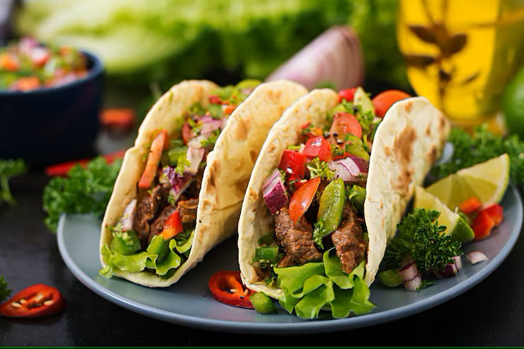

Tacos

List of Ingredients:
- Carne Asada
- Cilantro
- Hot Salsa
- fresh corn tortillas
- Fresh lime, cut into wedges
- hot sauce or sliced Jalepenos (or both)
Steps:
- grill Carne Asada on the BBQ
- Make fresh Tortillas on the Kamal
- Fill Tortilla with meat cilantro and Salsa
- top with hot sauce or Jalepenos
- squeeze fresh lime on top
- Enjoy!